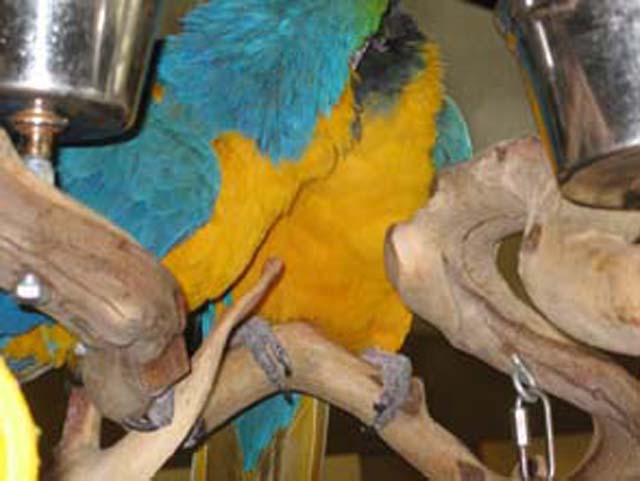
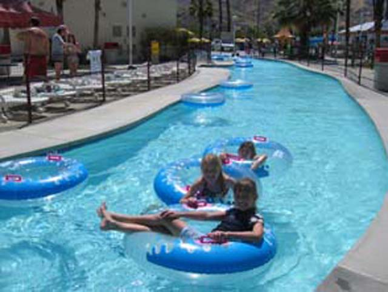
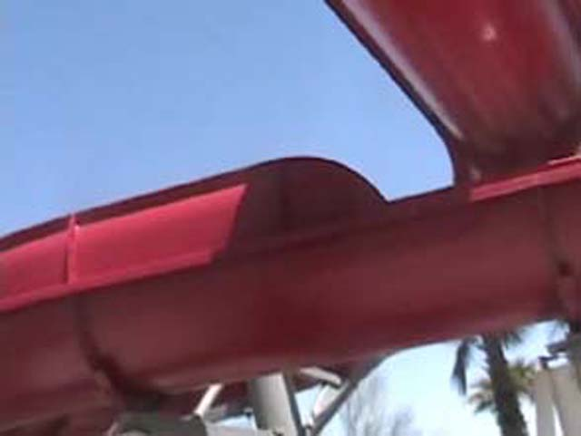
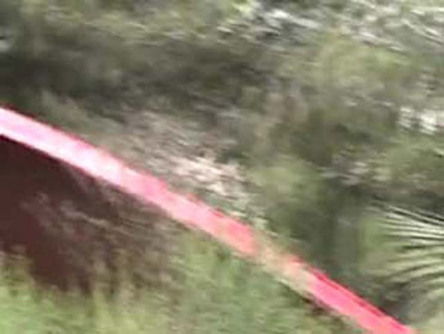
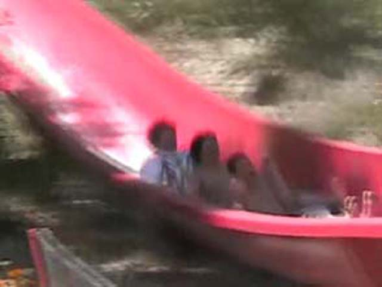

Palm Springs 2005
Ok, I admit it. This is not an update about roller coasters. But it does have a waterpark. so instead of just the waterpark I decided to make the whole thing an update. We are driving to Palm Springs.
Yay! We're at the Marriot villas! These are really nice Villas and I would reccomed them for anyone staying in Palm Springs. Stay at the Villas instead of the hotel. Its worth it!
To show you how nice these villas are, Heres a picture of the inside of our villa! These villas ROCK!
Celeste is Swimming like a shark in the Wading Pool. By the way, The pool is also very nice.
 Gee, I sure do love to film.
Gee, I sure do love to film.
Heres a picture to show you how nice the pools are! It even has a rock waterfall!
(That you can't see in the very blurry photo.)
Here is another photo of the Villas to show you how nice they are. The hotel is also very nice! Why am I filming?!
Heres a picture of the hotel. We were going to go on a boat ride in the lake, but...
Nuff said

5 seconds after this photo was taken, the Parrots began screaming and squaking at us telling us to go away and leave them alone!
WORST STORE EVER!!!!! An empty deserted store that sells carved wood for $100.00!?!?!? This is a MUCH bigger ripoff than that claw game from Knotts!
 Since we couldn't go on the boat, we got Starbucks! I really need to stop filming so much!
Since we couldn't go on the boat, we got Starbucks! I really need to stop filming so much!
Look out for Mikeys Beef Jerky of Doom before its too late.
Here we are at Islands!
Emily loves the food at Islands.
This is how you would describe Celeste.
My parents are looking at shoes.
To hear Celeste babble on about some stranger named Jerry, watch our Palm Springs 2005 Video.
Go away! I don't like you Kevin!!! I don't like you at all!!!
Random picture of the Palm Springs Mall!
We decided to buy ourselves some Sees.
I found this book in the Barnes & Nobles and it sounds intresting.
Mikey and Celeste are in NOODLE WAR!!!!
Remember that I told you there was a waterpark in Palm Springs. Well here it is. Soak City Palm Springs.
This statue in the front plaza looks nice.
These slides were closed today. Luckily, the Star Atrraction of Soak City Palm Springs was open!
 We decided to eat in the parking lot since the food there was a ripoff!
We decided to eat in the parking lot since the food there was a ripoff!

Celeste and Emily hangout in the lazy river!
 Ahh. Surf Rider Rapids. The star attraction of Soak City Palm Springs! I'll give you a mini tour of the ride.
Ahh. Surf Rider Rapids. The star attraction of Soak City Palm Springs! I'll give you a mini tour of the ride.

It starts out with a few small drops and a few turns.
 Then it digs into a ground hugging helix. You can see Surf Rider rapids makes good use of the terrain.
Then it digs into a ground hugging helix. You can see Surf Rider rapids makes good use of the terrain.

And then its a 40ft drop down the hill!

And then the ride is over. I would give it a B and its so far my 6th Favorite Water Slide!
Mikey is having fun on Wipeout.
Allie and Jenna do their Cowboy impressions!
Mikados is a Japaneese Froman Grill Restraunt! These are cool.
While we were waiting for our table,Celeste found this Dalmatian Fish and named it Moo Moo.
These are really cool!
Its an onion Volcano! Yipee!!!!!!
Our chef was cool.
They also throw Shrimp in your mouth. I sucked. Nuff Said.
Another moment of Incrediblecoasters Stupidity!
 We really should replace one of Venturas Chineese Restraunts with one of these!
We really should replace one of Venturas Chineese Restraunts with one of these!
And that concludes our week in Palm Springs.
Home